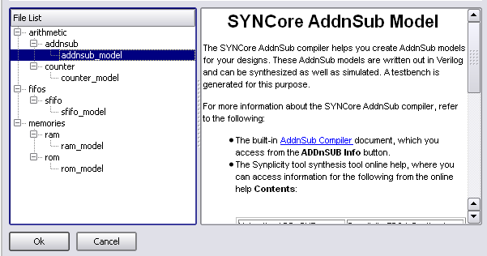
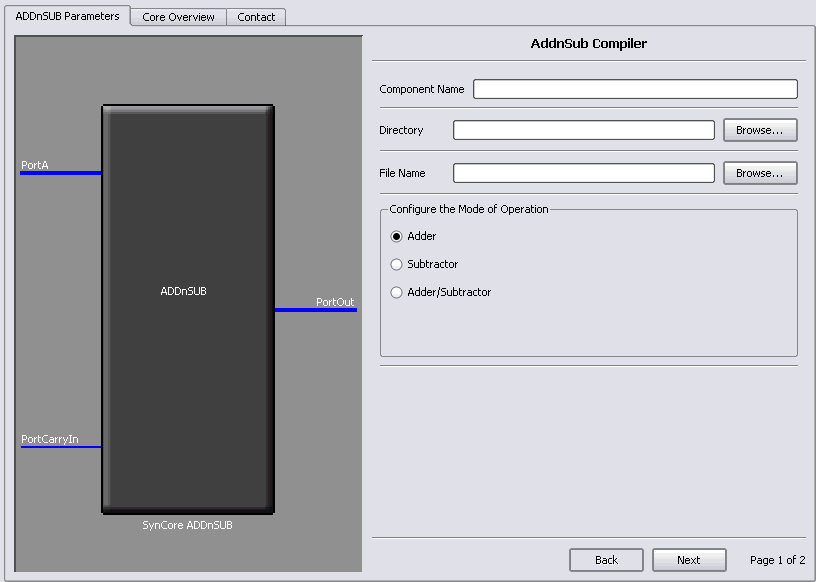
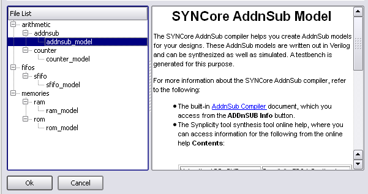
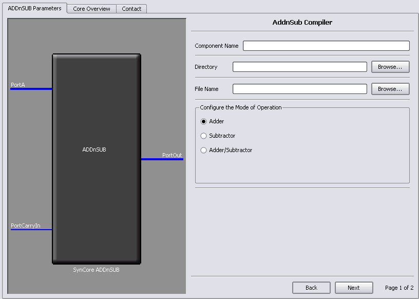
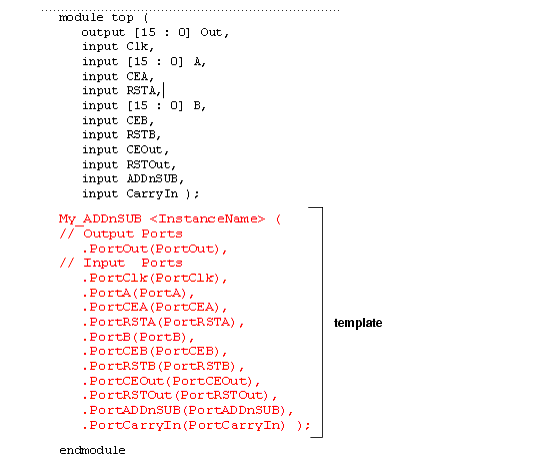

- From the FPGA synthesis tool GUI, select Run->Launch SYNCore or click the Launch SYNCore icon
 to start the SYNCore IP wizard.
to start the SYNCore IP wizard. - In the window that opens, select addnsub_model and click Ok to open page1 of the wizard.


The SYNCore adder/subtractor compiler generates Verilog code for a parametrizable, pipelined adder/subtractor. The adder/subtractor includes a single clock that controls the entire pipeline stages. You can find the following information here:
The SYNCore IP wizard helps you generate Verilog code for your adder/subtractor implementation requirements.
The following procedure shows you how to generate Verilog code for an adder/subtractor using the SYNCore IP wizard. Note that the SYNCore adder/subtractor models use Verilog 2001. When adding an adder/subtractor model to a Verilog-95 design, be sure to enable the Verilog 2001 check box on the Verilog tab of the Implementation Options dialog box or include a set_option -vlog_std v2001 statement in your project file to prevent a syntax error.


2. Specify the parameters you need in the wizard. For details about the parameters, see Specifying Parameters. The ADDnSUB symbol on the left reflects any parameters you set.
3. After you have specified all the parameters you need, click the Generate button in the lower left corner. The tool displays a confirmation message (TCL execution successful!) and writes the required files to the directory you specified on page 1 of the wizard. The HDL code is in Verilog.
4. The SYNCore wizard also generates a testbench for your adder/subtractor. The testbench covers a limited set of vectors. You can now close the wizard.
5. Edit the adder/subtractor files if necessary.
6. Add the adder/subtractor you generated to your design.

module top (
output [15 : 0] Out,
input Clk,
input [15 : 0] A,
input CEA,
input RSTA,
input [15 : 0] B,
input CEB,
input RSTB,
input CEOut,
input RSTOut,
input ADDnSUB,
input CarryIn );
My_ADDnSUB ADDnSUB_inst (
// Output Ports
.PortOut(Out),
// Input Ports
.PortClk(Clk),
.PortA(A),
.PortCEA(CEA),
.PortRSTA(RSTA),
.PortB(B),
.PortCEB(CEB),
.PortRSTB(RSTB),
.PortCEOut(CEOut),
.PortRSTOut(RSTOut),
.PortADDnSUB(ADDnSUB),
.PortCarryIn(CarryIn) );
endmodule
The following table lists the port assignments for all possible configurations; the third column specifies the conditionsunder which the port is available.
The SYNCore adder/subtractor can be configured as any of the following:
If you are creating a constant input adder, subtractor, or a dynamic adder/subtractor with the SYNCore IP wizard, you must select Constant Value Input and specify a value for port B in the Constant Value/Port B Width field on page 2 of the parameters. The following procedure lists the parameters you need to define when generating an adder/subtractor. For descriptions of each parameter, see SYNCore Adder/Subtractor Parameters.
As you enter the page 2 parameters, the ADDnSUB symbol dynamically updates to reflect the parameters you set.
The following describe the parameters you can set in the adder/subtractor wizard, which opens when you select addnsub_model:
The SYNCore adder/subtractor compiler generates Verilog code for a parametrizable, pipelined adder/subtractor. The adder/subtractor has a single clock that controls the entire pipeline stages (if used) of the adder/subtractor.
As its name implies, this block just adds/subtracts the inputs and provides the output result. One of the inputs can be configured as a constant. The data inputs and outputs of the adder/subtractor can be pipelined; the pipeline stages can be 0 or 1, and can be configured individually. The individual pipeline stage registers include their own reset and enable ports.
The reset to all of the pipeline registers can be configured either as synchronous or asynchronous using the RESET_TYPE parameter. The reset type of the pipeline registers cannot be configured individually.
SYNCore adder/subtracor has ADD_N_SUB parameter, which can take three values ADD, SUB, or DYNAMIC. Based on this parameter value, the adder/subtractor can be configured as follows.
Based on the parameter CONSTANT_PORT, the adder can be configure in two ways.
In this mode, port A and port B values are added. Optional pipeline stages can also be inserted at port A, port B or at both port A and port B. Optionally, pipeline stages can also be added at the output port. Depending on pipeline stages, a number of the adder configurations are given below.
Adder with No Pipeline Stages - In this mode, the port A and port B inputs are added. The adder is purely combinational, and the output changes immediately with respect to the inputs.
Parameters: PORTA_PIPELINE_STAGE= `0'
Adder with Pipeline Stages at Input Only - In this mode, the port A and port B inputs are pipelined and added. Because there is no pipeline stage at the output, the result is valid at each rising edge of the clock.
Parameters: PORTA_PIPELINE_STAGE= `1'
PORTB_PIPELINE_STAGE= `1'
PORTOUT_PIPELINE_STAGE= `0'
Adder with Pipeline Stages at Input and Output - In this mode, the port A and port B inputs are pipelined and added, and the result is pipelined. The result is valid only on the second rising edge of the clock.
Parameters: PORTA_PIPELINE_STAGE= `1'
PORTB_PIPELINE_STAGE= `1'
PORTOUT_PIPELINE_STAGE= `1'
In this mode, port A is added with a constant value (the constant value can be passed though the parameter CONSTANT_VALUE). Optional pipeline stages can also be inserted at port A, Optionally, pipeline stages can also be added at the output port. Depending on the pipeline stages, a number of the adder configurations are given below (here CONSTANT_VALUE='3')
Adder with No Pipeline Stages - In this mode, input port A is added with a constant value. The adder is purely combinational, and the output changes immediately with respect to the input.
Parameters: PORTA_PIPELINE_STAGE= `0'
PORTOUT_PIPELINE_STAGE= `0'
Adder with Pipeline Stage at Input Only - In this mode, input port A is pipelined and added with a constant value. Because there is no pipeline stage at the output, the result is valid at each rising edge of the clock.
Parameters: PORTA_PIPELINE_STAGE= `1'
PORTOUT_PIPELINE_STAGE= `0'
Adder with Pipeline Stages at Input and Output - In this mode, input port A is pipelined and added with a constant value, and the result is pipelined. The result is valid only on the second rising edge of the clock.
Parameters: PORTA_PIPELINE_STAGE= `1'
PORTOUT_PIPELINE_STAGE= `1'
Based on the parameter CONSTANT_PORT, the subtractor can be configure in two ways.
In this mode, port B is subtracted from port A. Optional pipeline stages can also be inserted at port A, port B, or both ports. Optionally, pipeline stages can also be added at the output port. Depending on the pipeline stages, a number of the subtractor configurations are given below.
Subtractor with No Pipeline Stages - In this mode, input port B is subtracted from port A, and the subtractor is purely combinational. The output changes immediately with respect to the inputs.
Parameters: PORTA_PIPELINE_STAGE= `0'
PORTB_PIPELINE_STAGE= `0'
PORTOUT_PIPELINE_STAGE= `0'
Subtractor with Pipeline Stages at Input Only - In this mode, input port B and input PortA are pipelined and then subtracted. Because there is no pipeline stage at the output, the result is valid at each rising edge of the clock.
Parameters: PORTA_PIPELINE_STAGE= `1'
PORTB_PIPELINE_STAGE= `1'
PORTOUT_PIPELINE_STAGE= `0'
Subtractor with Pipeline Stages at Input and Output - In this mode, input PortA and PortB are pipelined and then subtracted, and the result is pipelined. The result is valid only at the second rising edge of the clock.
Parameters: PORTA_PIPELINE_STAGE= `1'
PORTB_PIPELINE_STAGE= `1'
PORTOUT_PIPELINE_STAGE= `1'
In this mode, a constant value is subtracted from port A (the constant value can be passed though the parameter CONSTANT_VALUE). Optional pipeline stages can also be inserted at port A, Optionally, pipeline stages can also be added at the output port. Depending on pipeline stages, a number of the subtractor configurations are given below (here CONSTANT_VALUE='1').
Subtractor with No Pipeline Stages - In this mode, a constant value is subtracted from port A. The subtractor is purely combinational, and the output changes immediately with respect to the input.
Parameters: PORTA_PIPELINE_STAGE= `0'
PORTOUT_PIPELINE_STAGE= `0'
Subtractor with Pipeline Stages at Input Only - In this mode, a constant value is subtracted from pipelined input port A. Because there is no pipeline stage at the output, the output is valid at each rising edge of the clock.
Parameters: PORTA_PIPELINE_STAGE= `1'
PORTOUT_PIPELINE_STAGE= `0'
Subtractor with Pipeline Stages at Input and Output - In this mode, a constant value is subtracted from pipelined port A, and the output is pipelined. The result is valid only at the second rising edge of the clock.
Parameters: PORTA_PIPELINE_STAGE= `1'
PORTOUT_PIPELINE_STAGE= `1'
In dynamic adder/subtractor mode, port PortADDnSUB controls adder/subtractor operation.
Based on the parameter CONSTANT_PORT the dynamic adder/subtractor can be configured in one of two ways:
In this mode, the addition and subtraction is dynamic based on the value of input port PortADDnSUB. Optional pipeline stages can also be inserted at Port A, Port B, or both Port A and Port B. Optionally, pipeline stages can also be added at the output port. Depending on pipeline stages, some of the dynamic adder/subtractor configurations are given below.
Dynamic Adder/Subtractor with No Pipeline Registers - In this mode, the dynamic adder/subtractor is a purely combinational, and output changes immediately with respect to the inputs.
Parameters: PORTA_PIPELINE_STAGE= `0'
PORTB_PIPELINE_STAGE= `0'
PORTOUT_PIPELINE_STAGE= `0'
Dynamic Adder/Subtractor with Pipeline Stages at Input Only - In this mode, input port A and port B are pipelined and then added/subtracted based on the value of port PortADDnSUB. Becasuse there is no pipeline stage at the output port, the result immediately changes with respect to the PortADDnSUB signal.
Parameters: PORTA_PIPELINE_STAGE= `1'
PORTB_PIPELINE_STAGE= `1'
PORTOUT_PIPELINE_STAGE= `0'
Dynamic Adder/Subtractor with Pipeline Stages at Input and Output - In this mode, input port A and port B are pipelined and then added/subtracted based on the value of port PortADDnSUB. Because the output port is pipelined, the result is valid only on the second rising edge of the clock.
Parameters: PORTA_PIPELINE_STAGE= `1'
PORTB_PIPELINE_STAGE= `1'
PORTOUT_PIPELINE_STAGE= `1'
In this mode, a constant value is either added or subtracted from port A based on input port value PortADDnSUB (the constant value can be passed though the parameter CONSTANT_VALUE). Optional pipeline stages can also be inserted at port A, Optionally, pipeline stages can also be added at the output port. Depending on the pipeline stages, a number of the dynamic adder/subtractor configurations are given below (here CONSTANT_VALUE='1').
Dynamic Adder/Subtractor with No Pipeline Registers - In this mode, dynamic adder/subtractor is a purely combinational, and the output change immediately with respect to the input.
Parameters: PORTA_PIPELINE_STAGE= `0'
PORTOUT_PIPELINE_STAGE= `0'
Dynamic Adder/Subtractor with Pipeline Stages at Input Only - In this mode, a constant value is either added or subtracted from the pipelined version of port A based on the value of port PortADDnSUB. Because there is no pipeline stage on the output port, the result changes immediately with respect to the PortADDnSUB signal.
Parameters: PORTA_PIPELINE_STAGE= `1'
PORTOUT_PIPELINE_STAGE= `0'
Dynamic Adder/Subtractor with Pipeline Stages at Input and Output - In this mode, a constant value is either added or subtracted from the pipelined version of port A based on the value of port PortADDnSUB. Because the output port is pipelined, the result is valid only on the second rising edge of the clock.
Parameters: PORTA_PIPELINE_STAGE= `1'
PORTOUT_PIPELINE_STAGE= `1'
The following waveform shows the behavior of the dynamic adder/subtractor with a carry input (the carry input is assumed to be 0).
The following waveform shows the complete signal set for the dynamic adder/subtractor. The enable and reset signals are always present in all of the previous cases.
© Copyright 2008 Synopsys, Inc.